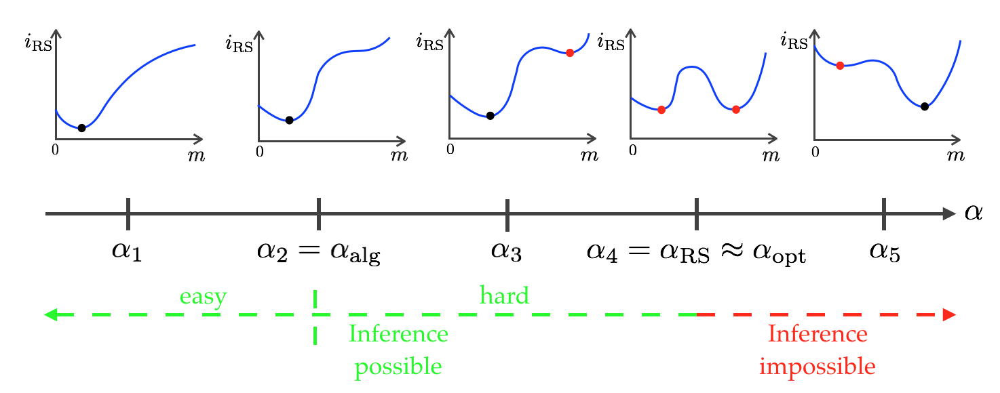
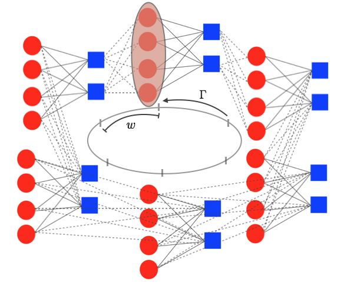

Mohamad DiaBiography
Research InterestsMy research interests lie at the interface between statistical inference, machine learning, coding theory, and statistical physics of spin glasses. Currently, I am working on applying and developing new data science tools for the “Euclid” space mission project in order to investigate dark matter. My PhD research at EPFL's Information Processing Group (IPG) was principally focused on inference and learning over graphical models, which includes problems from error-correcting codes, compressed sensing, and community detection. My work spans both the practical and theoretical aspects of such problems. This covers the design and analysis of optimal low-complexity message-passing algorithms, the application of statistical physics methods, the derivation of information theoretic limits, and the development of rigorous proof techniques. Statistical Physics - Phase Transition and Rigorous PredictionsOver the last century, statistical physics techniques have developed with the aim to describe the behaviour of systems with a large number of degrees of freedom and to give predictions which would be very difficult to guess. One of these techniques is the Replica method, which was conjectured to predict the asymptotic mutual information of a random graphical model and to detect the algorithmic and optimal phase transitions (see figure below). We prove that the Replica formula is exact in many problems that have been studied in the context of error correcting codes, compressed sensing and machine learning (mainly the random linear estimation and low-rank matrix factorization problems). Hence, we are able to come up with rigorous information-theoretical limits for many open problems. Moreover, we prove that, for a large set of parameters, an efficient iterative algorithm called Approximate Message-Passing (AMP) is optimal in the Bayesian setting. Our proof technique has an interest of its own as it is transposable to various inference problems and it exploits three essential ingredients: the Guerra-interpolation method introduced in statistical physics, the analysis of the AMP algorithm through State Evolution (SE) and the theory of spatial coupling and threshold saturation in coding. Spatial Coupling - Algorithmic Tool and Proof TechniqueSpatial coupling is a powerful graphical representation used to improve the algorithmic message-passing performance. It is the underlying principle behind the threshold saturation phenomenon (where the algoritmic threshold achieves the optimal one). Such representation was successfully applied to multiple graphical models ranging from LDPC codes to compressed sensing. Spatial coupling can be represented via a graphical model starting from the original factor graph. Assume that we have a factor graph of size . We take several instances of this factor graph and we place them next to each other on a chain of length . We then locally couple the underlying factor graphs with a coupling window to obtain a bigger factor graph of size (see figure below). In the resulting factor graph, each variable node is connected to the corresponding check nodes of the same underlying factor graph and to the check nodes of the neighboring factor graphs. This construction creates a spatial dimension, along the positions of the chain, that will help the algorithm. The second step in constructing efficient spatially coupled graphs is to introduce a seed at a certain position of the chain. This seed can be introduced as a side information which helps the algorithm at the boundaries and initiates a “wave” that propagates inwards and boosts the performance. Interestingly, spatial coupling can be used both as a “construction technique” to boost the algorithmic performance and as a “proof technique” to compute some information theoretic quantities. Therefore, even if the problem at hand does not provide the freedom of constructing a spatially coupled model in practice, one can still use spatial coupling for an auxiliary model. Intuitively speaking, since the low-complexity algorithm on the auxiliary model is optimal by the threshold saturation phenomenon, it is easier to compute the information theoretic quantities on that model and then apply them to the underlying model. Selected PublicationsPhD Thesis
Conferences
Journals
Note: Authors are listed in alphabetical and/or affiliation order. |